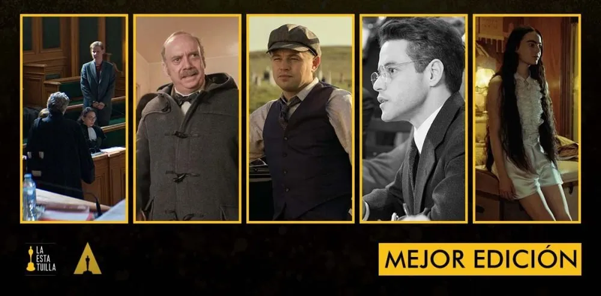

Mejor Película
- "American Fiction,” Ben LeClair, Nikos Karamigios, Cord Jefferson y Jermaine Johnson, productores
- "Anatomy of a Fall,” Marie-Ange Luciani y David Thion, productores
- "Barbie,” David Heyman, Margot Robbie, Tom Ackerley y Robbie Brenner, productores
- "The Holdovers,” Mark Johnson, productor
- "Killers of the Flower Moon,” Dan Friedkin, Bradley Thomas, Martin Scorsese y Daniel Lupi, productores
- "Maestro,” Bradley Cooper, Steven Spielberg, Fred Berner, Amy Durning y Kristie Macosko Krieger, productores
- "Oppenheimer,” Emma Thomas, Charles Roven y Christopher Nolan, productores
- "Past Lives,” David Hinojosa, Christine Vachon y Pamela Koffler, productores
- "Poor Things,” Ed Guiney, Andrew Lowe, Yorgos Lanthimos y Emma Stone, productores
- "The Zone of Interest,” James Wilson, productor
Mejor Director
- Justine Triet — "Anatomy of a Fall”
- Martin Scorsese — "Killers of the Flower Moon”
- Christopher Nolan — "Oppenheimer”
- Yorgos Lanthimos — "Poor Things”
- Jonathan Glazer — "The Zone of Interest”
Mejor Actor Protagonista
- Bradley Cooper — "Maestro”
- Colman Domingo — "Rustin”
- Paul Giamatti — "The Holdovers”
- Cillian Murphy — "Oppenheimer”
- Jeffrey Wright — "American Fiction”
Mejor Actriz Protagonista

- Annette Bening — "Nyad”
- Lily Gladstone — "Killers of the Flower Moon”
- Sandra Hüller — "Anatomy of a Fall”
- Carey Mulligan — "Maestro”
- Emma Stone — "Poor Things”
Mejor Actor de Reparto
- Sterling K. Brown — "American Fiction”
- Robert De Niro – "Killers of the Flower Moon”
- Robert Downey Jr. — "Oppenheimer”
- Ryan Gosling — "Barbie”
- Mark Ruffalo — "Poor Things”
Mejor Actriz de Reparto

- Emily Blunt — "Oppenheimer”
- Danielle Brooks — "The Color Purple”
- America Ferrera – "Barbie”
- Jodie Foster — "Nyad”
- Da’Vine Joy Randolph — "The Holdovers”
Mejor Guion Adaptado
- "American Fiction,” escrito por Cord Jefferson
- "Barbie,” escrito por Greta Gerwig y Noah Baumbach
- "Oppenheimer,” escrito por Christopher Nolan
- "Poor Things,” guion de Tony McNamara
- "The Zone of Interest,” escrito por Jonathan Glazer
Mejor Guion Original
- "Anatomy of a Fall,” guion de Justine Triet y Arthur Harari
- "The Holdovers,” escrito por David Hemingson
- "Maestro,” escrito por Bradley Cooper y Josh Singer
- "May December,” guion de Samy Burch; historia de Samy Burch y Alex Mechanik
- "Past Lives,” escrito por Celine Song
Mejor Fotografía

- "El Conde” – Edward Lachman
- "Killers of the Flower Moon” – Rodrigo Prieto
- "Maestro” – Matthew Libatique
- "Oppenheimer” – Hoyte van Hoytema
- "Poor Things” – Robbie Ryan
Mejor Canción Original

- "The Fire Inside” de "Flamin’ Hot,” música y letra de Diane Warren
- "I’m Just Ken” de "Barbie,” música y letra de Mark Ronson y Andrew Wyatt
- "It Never Went Away” de "American Symphony,” música y letra de Jon Batiste y Dan Wilson
- "Wahzhazhe (A Song For My People)” de "Killers of the Flower Moon,” música y letra de Scott George
- "What Was I Made For?” de "Barbie,” música y letra de Billie Eilish y Finneas O’Connell
Mejor Diseño de Vestuario

- "Barbie” – Jacqueline Durran
- "Killers of the Flower Moon” – Jacqueline West
- "Napoleon” – Janty Yates y Dave Crossman
- "Oppenheimer” – Ellen Mirojnick
- "Poor Things” – Holly Waddington
Mejor Sonido
- "The Creator,” Ian Voigt, Erik Aadahl, Ethan Van der Ryn, Tom Ozanich y Dean Zupancic
- "Maestro,” Steven A. Morrow, Richard King, Jason Ruder, Tom Ozanich y Dean Zupancic
- "Mission: Impossible – Dead Reckoning Part One,” Chris Munro, James H. Mather, Chris Burdon y Mark Taylor
- "Oppenheimer,” Willie Burton, Richard King, Gary A. Rizzo y Kevin O’Connell
- "The Zone of Interest,” Tarn Willers y Johnnie Burn
Mejor Banda Sonora Original
- "American Fiction” – Laura Karpman
- "Indiana Jones and the Dial of Destiny” John Williams
- "Killers of the Flower Moon” – Robbie Robertson
- "Oppenheimer” – Ludwig Göransson
- "Poor Things” – Jerskin Fendrix
Mejor Cortometraje de Acción Real

- "The After,” Misan Harriman y Nicky Bentham
- "Invincible,” Vincent René-Lortie y Samuel Caron
- "Knight of Fortune,” Lasse Lyskjær Noer y Christian Norlyk
- "Red, White and Blue,” Nazrin Choudhury y Sara McFarlane
- "The Wonderful Story of Henry Sugar,” Wes Anderson y Steven Rales
Mejor Cortometraje Animado
- "Letter to a Pig,” Tal Kantor y Amit R. Gicelter
- "Ninety-Five Senses,” Jerusha Hess y Jared Hess
- "Our Uniform,” Yegane Moghaddam
- "Pachyderme,” Stéphanie Clément y Marc Rius
- "War Is Over! Inspired by the Music of John & Yoko,” Dave Mullins y Brad Booker
Mejor Documental de Largometraje

- "Bobi Wine: The People’s President,” Moses Bwayo, Christopher Sharp y John Battsek
- "The Eternal Memory”
- "Four Daughters,” Kaouther Ben Hania y Nadim Cheikhrouha
- "To Kill a Tiger,” Nisha Pahuja, Cornelia Principe y David Oppenheim
- "20 Days in Mariupol,” Mstyslav Chernov, Michelle Mizner y Raney Aronson-Rath
Mejor Documental de Cortometraje
- "The ABCs of Book Banning,” Sheila Nevins y Trish Adlesic
- "The Barber of Little Rock,” John Hoffman y Christine Turner
- "Island in Between,” S. Leo Chiang y Jean Tsien
- "The Last Repair Shop,” Ben Proudfoot y Kris Bowers
- "Nǎi Nai & Wài Pó,” Sean Wang y Sam Davis
Mejor Película Internacional

- "Io Capitano” (Italia)
- "Perfect Days” (Japón)
- "Society of the Snow” (España)
- "The Teachers’ Lounge” (Alemania)
- "The Zone of Interest” (Reino Unido)
Mejor Película Animada

- "The Boy and the Heron,” Hayao Miyazaki y Toshio Suzuki
- "Elemental,” Peter Sohn y Denise Ream
- "Nimona,” Nick Bruno, Troy Quane, Karen Ryan y Julie Zackary
- "Robot Dreams,” Pablo Berger, Ibon Cormenzana, Ignasi Estapé y Sandra Tapia Díaz
- "Spider-Man: Across the Spider-Verse,” Kemp Powers, Justin K. Thompson, Phil Lord, Christopher Miller y Amy Pascal
Mejor Maquillaje y Peinado
- "Golda,” Karen Hartley Thomas, Suzi Battersby y Ashra Kelly-Blue
- "Maestro,” Kazu Hiro, Kay Georgiou y Lori McCoy-Bell
- "Oppenheimer,” Luisa Abel
- "Poor Things,” Nadia Stacey, Mark Coulier y Josh Weston
- "Society of the Snow,” Ana López-Puigcerver, David Martí y Montse Ribé
Mejor Diseño de Producción
- "Barbie,” diseño de producción: Sarah Greenwood; decoración del set: Katie Spencer
- "Killers of the Flower Moon,” diseño de producción: Jack Fisk; decoración del set: Adam Willis
- "Napoleon,” diseño de producción: Arthur Max; decoración del set: Elli Griff
- "Oppenheimer,” diseño de producción: Ruth De Jong; decoración del set: Claire Kaufman
- "Poor Things,” diseño de producción: James Price y Shona Heath; decoración del set: Zsuzsa Mihalek
Mejor Montaje

- "Anatomy of a Fall” – Laurent Sénéchal
- "The Holdovers” – Kevin Tent
- "Killers of the Flower Moon” – Thelma Schoonmaker
- "Oppenheimer” – Jennifer Lame
- "Poor Things” – Yorgos Mavropsaridis
Mejores Efectos Visuales
- "The Creator,” Jay Cooper, Ian Comley, Andrew Roberts y Neil Corbould
- "Godzilla Minus One,” Takashi Yamazaki, Kiyoko Shibuya, Masaki Takahashi y Tatsuji Nojima
- "Guardians of the Galaxy Vol. 3,” Stephane Ceretti, Alexis Wajsbrot, Guy Williams y Theo Bialek
- "Mission: Impossible – Dead Reckoning Part One,” Alex Wuttke, Simone Coco, Jeff Sutherland y Neil Corbould
- "Napoleon,” Charley Henley, Luc-Ewen Martin-Fenouillet, Simone Coco y Neil Corbould